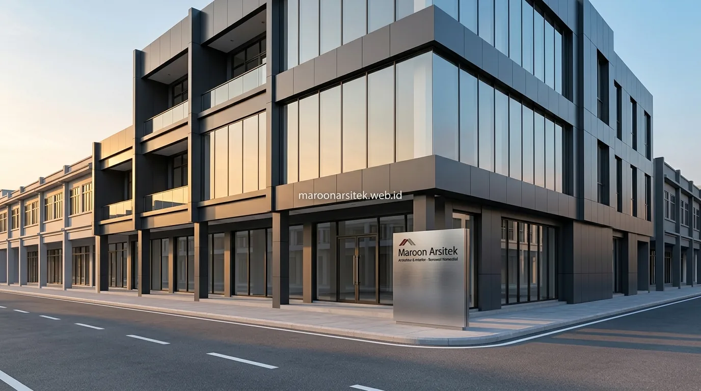

Ruko dengan desain lama sering kali memiliki tata ruang yang kaku dan tidak mendukung suasana kerja modern, sehingga banyak pemilik bangunan ragu apakah renovasi dapat benar-benar mengubah kesan bangunan secara signifikan. Bersama layanan jasa renovasi bangunan dari Maroon Arsitek, ruko lama Anda dapat ditransformasikan secara menyeluruh menjadi ruang kantor kontemporer yang estetik, fungsional, dan bernilai sewa tinggi.
Redesign Interior untuk Suasana Kerja Modern dan Fungsional
Redesign interior ruko menjadi kantor modern melibatkan perubahan tata ruang, pemilihan material, dan skema pencahayaan yang mendukung produktivitas kerja, berbeda dari tata ruang ruko konvensional yang umumnya berorientasi pada display produk. Perubahan ini menjadi fondasi utama transformasi fungsi bangunan.
Penataan ulang ruang dilakukan dengan mempertimbangkan alur kerja tim, area kolaborasi, dan ruang privat yang dibutuhkan dalam operasional kantor modern, berbeda dari tata letak ruko yang sebelumnya lebih terbuka untuk kebutuhan retail atau gudang.
- Material Profesional: Mengombinasikan material panel kayu HPL hangat, partisi kaca aluminium ramping, dan aksen industrial modern.
- Ergonomi Ruang: Memastikan jarak sirkulasi antar meja kerja minimal 1,2 meter demi kebebasan mobilitas karyawan.
- Pencahayaan Adaptif: Menata perpaduan *direct task lighting* dan *ambient warm lighting* untuk mengurangi kelelahan mata saat bekerja seharian.
Penataan Zona Kerja dan Area Kolaborasi dalam Satu Ruang
Kebutuhan ruang kerja yang mendukung kolaborasi tim dijawab melalui pembagian zona yang jelas antara area kerja individu, ruang rapat, dan area santai, meski berada dalam satu bangunan ruko dengan luas terbatas.
Pembagian zona ini memanfaatkan partisi ringan atau perbedaan level lantai untuk memisahkan fungsi ruang tanpa perlu membangun dinding permanen yang mengurangi fleksibilitas tata ruang di masa mendatang pada proyek jasa desain interior kantor.
Redesign Fasad Ruko agar Tampil sebagai Kantor Modern
Redesign fasad menjadi elemen penting dalam transformasi ruko menjadi kantor, karena tampilan luar bangunan menjadi kesan pertama yang membedakan fungsi kantor modern dari kesan ruko komersial pada umumnya. Perubahan fasad tidak selalu memerlukan pembongkaran struktur utama bangunan.
Penggantian material fasad, seperti penambahan panel kaca besar atau material komposit dengan garis desain yang lebih bersih, membantu menghadirkan kesan modern tanpa mengubah struktur dasar bangunan ruko yang sudah ada.
Penataan ulang signage dan elemen identitas visual pada fasad turut disesuaikan agar mencerminkan citra kantor profesional, berbeda dari signage ruko yang umumnya berorientasi pada promosi produk secara langsung saat menggunakan jasa kontraktor bangunan.

Penyesuaian Bukaan Fasad untuk Pencahayaan Alami Lebih Optimal
Kebutuhan pencahayaan alami yang lebih baik pada ruang kantor dijawab melalui penyesuaian ukuran dan posisi bukaan pada fasad, sehingga cahaya matahari dapat masuk lebih optimal dibanding kondisi ruko dengan bukaan terbatas.
Penyesuaian ini turut membantu mengurangi ketergantungan pada pencahayaan buatan di siang hari, sekaligus menghadirkan suasana kerja yang lebih nyaman dan berenergi bagi penghuni kantor.
Penyesuaian Sistem Mekanikal Elektrikal untuk Kebutuhan Kantor
Sistem mekanikal elektrikal ruko lama umumnya perlu disesuaikan dengan kebutuhan operasional kantor modern, termasuk kapasitas daya listrik, jaringan data, dan sistem pendingin ruangan yang berbeda dari kebutuhan operasional ruko sebelumnya. Penyesuaian ini menjadi bagian penting dari proses renovasi bangunan komersial.
Kapasitas daya listrik perlu dievaluasi ulang untuk mendukung perangkat kerja modern, seperti komputer dalam jumlah banyak dan sistem jaringan yang terintegrasi, yang umumnya membutuhkan kapasitas lebih besar dibanding kebutuhan operasional ruko konvensional.
Penataan jalur kabel data dan sistem pendingin ruangan juga disesuaikan dengan tata ruang baru, memastikan setiap zona kerja mendapat sirkulasi udara dan konektivitas yang memadai sesuai kebutuhan operasional kantor.
Evaluasi Kapasitas Listrik Sebelum Instalasi Perangkat Kantor
Kebutuhan kapasitas listrik yang memadai dijawab melalui evaluasi menyeluruh terhadap instalasi eksisting, untuk memastikan daya yang tersedia mencukupi kebutuhan perangkat kantor modern sebelum proses renovasi interior dimulai.
Evaluasi ini mencegah kendala teknis di kemudian hari, seperti keterbatasan daya yang baru disadari setelah seluruh perangkat kantor terpasang dan mulai dioperasikan secara penuh bersama tim jasa desain arsitek kami.